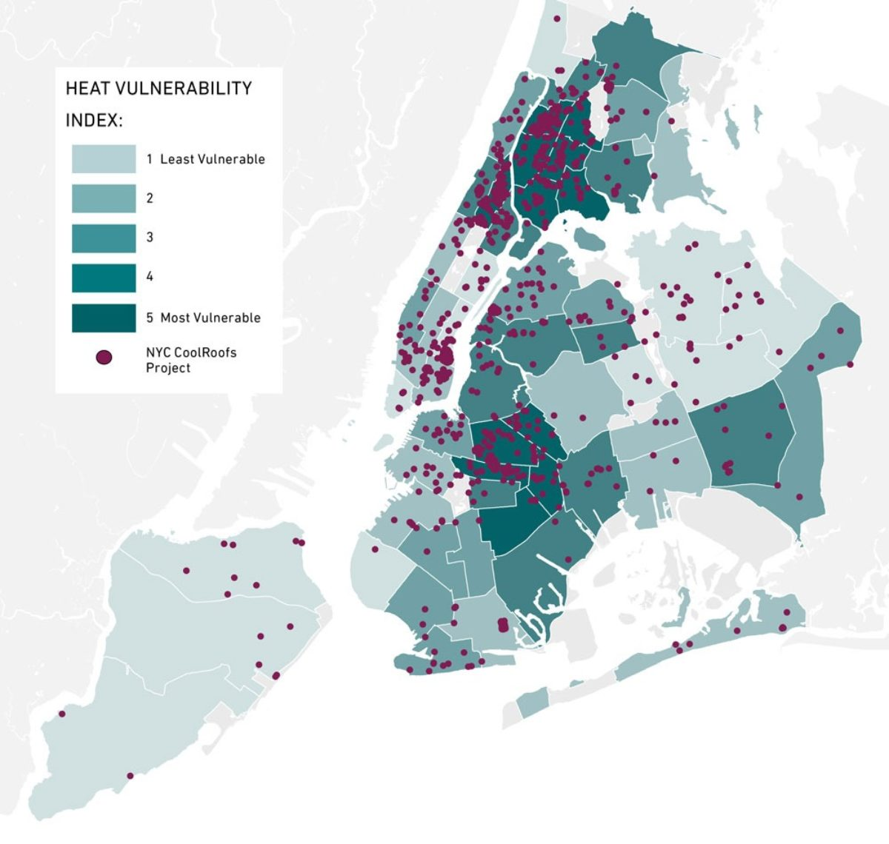

Week 4 Policy
In this week, our main focus is on policies that are designed to address some of the problems that have arisen or may arise in the future during urban development. Since I am interested in the urban heat island effects in New York City, I have looked for policies to mitigate the urban heat island effect.
Summary
Urban heat island is a worldwide phenomena, which happends more commonly in the metroplois and the city with high development speed, such as Guangzhou, Paris, and Toronto (Environment 2021). New York has the necessary pronounced seasonal urban heat island effect, which is more pronounced in the spring and fall (Gaffin et al. 2008). Prior to 2003, the urban heat island effect in New York might be attributed to the construction of skyscrapers in the Manhattan area and the expansion of the city (Gaffin et al. 2008).
In the policy “OneNYC 2050 BUILDING A STRONG AND FAIR CITY”, a series of policies have been proposed to address the effects of New York’s urban heat island effect in recent years, which not only exacerbates environmental warming, but also causes heat-related diseases (Fuleihan, Williams, and Zarrilli, n.d.). Therefore, it is necessary to mitigate the urban heat island effect in New York.
In order to mitigate the urban heat island effect and greenhouse gas emissions, the Cool Roof program was proposed in 2009 (“NYC CoolRoofs,” n.d.). The fundamental principle of mitigating the urban heat island effect relies on roofs coated with a special coating that has a high solar reflectivity and high infrared emissivity, reflecting the maximum amount of visible, infrared and ultraviolet light from the sun (“NYC CoolRoofs,” n.d.). However, cool roofs are currently only available through “Cool It Yourself” for installation on private properties, low-income, non-profit and citywide public institutions (“NYC CoolRoofs,” n.d.).

In the two policies mentioned above, the use of cool roofs to mitigate the urban heat island effect in New York City has been proven to be a less costly and effective method of cooling the city. However, there are other ways to mitigate the urban heat island effect in practice.
According to Jennifer et al. (n.d.), there are two common ways to mitigate the influence of urban heat island, one is increasing the reflectance of the surface of buildings to decrease the energy from the sun, the other is increasing the area of green space to decrease the evapotranspiration. In addition to this, Yamamoto (2006) also suggested that attempts could be made at the regional level to centralize the control of heat emission from buildings, the maintenance and improvement of parks and green spaces in the city, and the reorientation of industrial and commercial facilities according to the prevailing wind direction. Peng et al. (2020) found that the presence of water body could also help cool the city.
Application
- how the remotely sensed data you sourced could be used to assist with contributing to the policy goal?
Based on the above methods to mitigate the urban heat island effect, I found several suitable data sets and approaches which can be used to assist with contributing to the policy goals.
We need to compare the distribution of LST within New York City before the implementation of these measures and after the implementation to judge the effectiveness of the measures. If we want to mitigate the urban heat islands effect by adding cool roofs, or expanding green space in the city, or protecting water body can use Landsat 8 OLI/TIRS images to compute land surface temperature and classify different types of land use and land cover to identify the buildings, green space, water body, and other types of regions which are important to contribute the policy goal (Peng et al. 2020). Besides that, radiative transfer equation (RTE) can be used to calculate LST based on Landsat images by using ENVI (Peng et al. 2020). Besides that, the selection of areas with severe urban heat island effect can be made by combining Advanced Spaceborne Thermal Emission and Reflection Radiometer (ASTER) imagery containing evening thermal infrared data and Landsat 8 TIRS imagery containing daytime thermal infrared data, and judged by the results of Getis-Ord-Gi cluster analysis in ArcMAP (Mullerova and Williams 2019). However, Shaker et al. (2019) believe that the widely used LST does not accurately represent the temperature of building surfaces and other feature surfaces, so they chose to use free open-source data from weather stations combined with Landsat remote sensing imagery directly. Shaker et al. (2019) also chose to use LIDAR data to generate a Digital Elevation Model (DEM) to be generated as the study area’s input surface. In conclusion, using LIDAR data to generate DEM as the input surface, combining weather station data, Landsat 8 images and ASTER imagery to identify the distribution of UHI is a possible solution to assist with contributing to the policy goal, that is mitigate the urban heat island effect in New York City .
- How could the data be applied to solve the policy challenge?
According to the policy “OneNYC 2050 BUILDING A STRONG AND FAIR CITY” (n.d.), challenges in achieving the policy goals include limited funding, materials for the cool roofs, and what kind of buildings can have additional cool roofs. Firstly, the choice of reflective coating materials for cool roofs should meet the characteristics of environmental protection, long-term use and water resistance as much as possible. Secondly, the funds for roof addition are limited and cannot be completed for adding cool roofs for all buildings in New York City at once, so it might be possible that priority can be given to buildings with higher temperature and absorb more heat or buildings in densely populated areas. The method of selecting such buildings can be done by calculating the temperature of the land surface with the help of Landsat 8 TIRS images and selecting the target buildings for adding cool roofs (Mullerova and Williams 2019), and selecting the target buildings for roofing based on the population density data released by United States Census Bureau (Bureau, n.d.). This can solve the challenges encountered in the implementation of this policy to some extents.
In addition, according to the resolution of LST computed based on Landsat 8 images, it might not be suitable for analyzing the small-sized green space. Peng et al. (2020) suggested to use K-means cluster analysis to combine the small-sized green space into clusters.
Reflection
- what you have learnt in relation to the policy, city and the application of the data?
The urban heat island effect has a negative impact not only on the climate and nature, but also on humans, with an average of 87 deaths per year from heat-related diseases in New York as of 2011 (Jennifer et al., n.d.). This is why New York’s government and related agencies have proposed 219 policies to mitigate the urban heat island effect over a 10-year period (Jennifer et al., n.d.). This made me reflect not only on how to focus on the rapid development of cities, but also on the ability to take responsibility for dealing with the negative impacts of urban development, protecting the ecosystem, and protecting people, without losing sight of the other.
- What is interesting?
The policy is proposed in order to really solve the problem, in the continuous trial and error to find the most suitable method, and also according to the actual situation of the different timely adjustment and adaptations, in order to effectively solve the problem. Not the more policies proposed the better, but the more effective the better. Many published policies only propose goals, such as mitigating the heat island effect, slowing down climate warming, and reducing carbon emissions to X% by 2050, but do not propose practical methods. I think this happens because those proposing the policy believe that the solutions to the problems faced by different countries and regions are not identical, that there is no approach that applies to all situations, or that the solutions known to work have not been tested worldwide. Also, urban development is always rapidly changing and has to be considered in conjunction with other local policies, culture, and other aspects.
In addition, what I find interesting is that both the C40, a global organization’s proposal to mitigate the urban heat island effect and cool the city, and the New York government’s proposal to add cool roofs to buildings is a quick fix compared to expanding green space in the city, but it may not be a long-term solution. Perhaps the decision maker should consider the cost, efficiency and effectiveness of the solution when making the final decision.
- What is useful for the future?
What I found useful this week for my future study and life is that I learned about the impact of urban heat island effect, related policies to mitigate urban heat island effect and case studies on urban heat island effect, so that I can pay more attention to the impact of urban heat island effect in my future life, such as the impact on human health and environment. In terms of study and research, I will probably focus more on studying policies that only propose goals but do not give effective solutions, and try to propose feasible solutions based on what I have learned about remote sensing and GIS. I hope to make a small contribution to the human environment and the earth through our own efforts and more people will join such an industry.